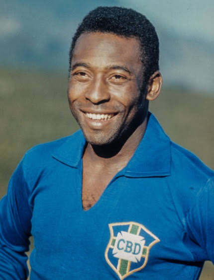
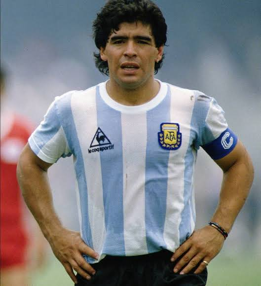
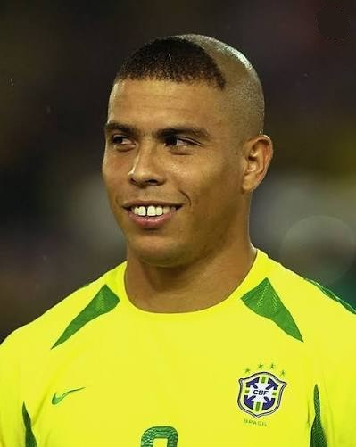
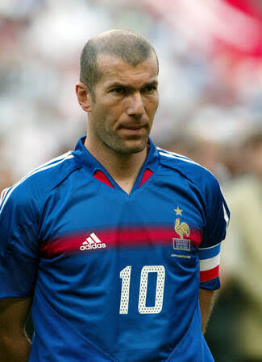
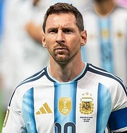
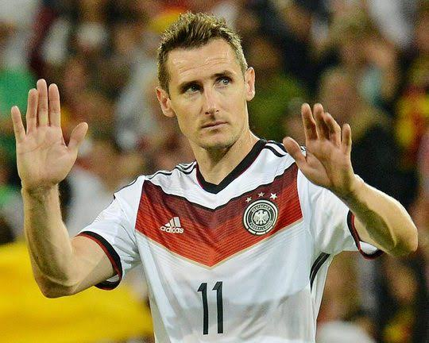
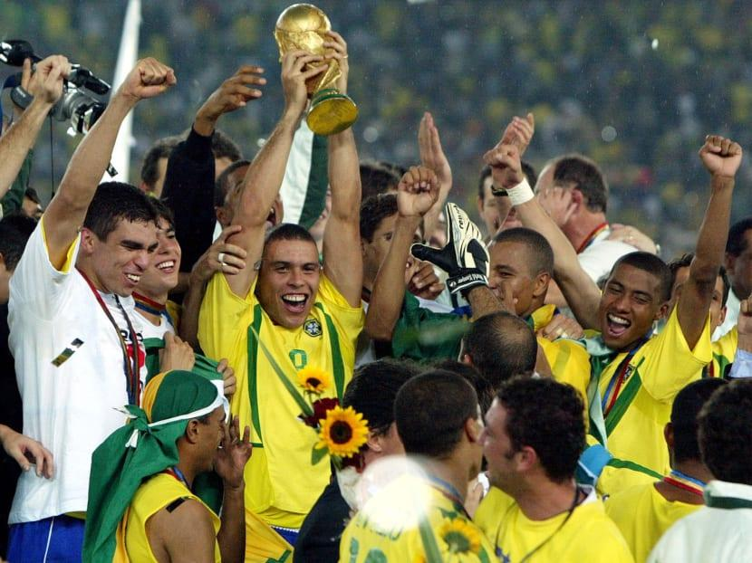
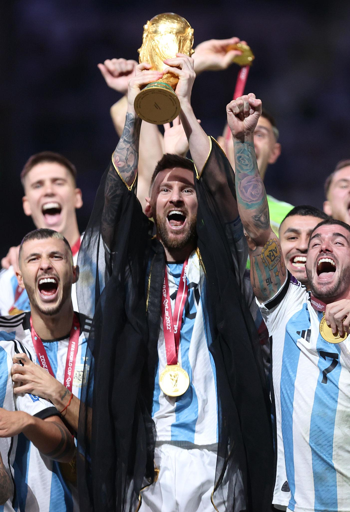
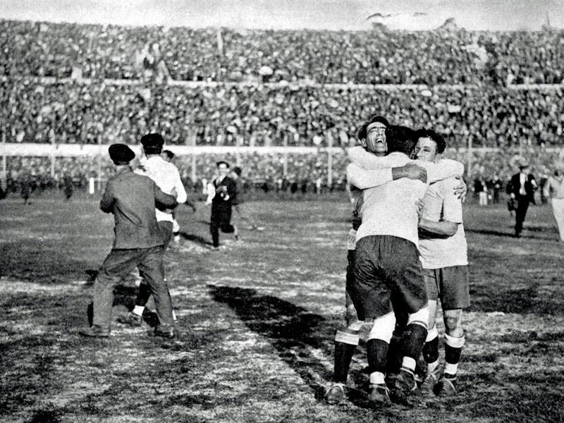

Lendas da Copa do Mundo
Conheça os jogadores que marcaram gerações e fizeram história no maior torneio do planeta.
Explorar JogadoresGrandes Jogadores

Pelé
Tricampeão mundial e considerado um dos maiores jogadores da história do futebol.

Maradona
Liderou a Argentina ao título de 1986 com atuações inesquecíveis.

Ronaldo Fenômeno
Bicampeão mundial e um dos maiores artilheiros da história das Copas.

Zinedine Zidane
Craque francês que brilhou na conquista da Copa do Mundo de 1998.

Lionel Messi
Campeão mundial em 2022 podendo repetir o feito em 2026 e um dos maiores jogadores de todos os tempos.

Miroslav Klose
Considerado o maior artilheiro da história das Copas do Mundo com 16 gols, mas esse recorde foi quebrado por Lionel Messi e Kylian Mbappé, na copa do mundo de 2026.
Estatísticas nas Copas do Mundo
| Jogador | Copas Disputadas | Edições | Gols | Títulos |
|---|---|---|---|---|
| Pelé | 4 | 1958, 1962, 1966, 1970 | 12 | 1958, 1962 e 1970 |
| Ronaldo | 4 | 1994, 1998, 2002, 2006 | 15 | 1994 e 2002 |
| Miroslav Klose | 4 | 2002, 2006, 2010, 2014 | 16 | 2014 |
| Lionel Messi | 5 | 2006, 2010, 2014, 2018, 2022 | 21 | 2022 |
| Zinedine Zidane | 3 | 1998, 2002, 2006 | 5 | 1998 |
| Maradona | 4 | 1982, 1986, 1990, 1994 | 8 | 1986 |
Curiosidades

Brasil
A Seleção Brasileira é a maior campeã da história da Copa do Mundo, com cinco títulos conquistados.

Lionel Messi
Em 2022, Messi conquistou seu primeiro título mundial e foi eleito o melhor jogador da competição.

Primeira Copa
A primeira Copa do Mundo aconteceu em 1930, no Uruguai, e foi vencida pela própria seleção anfitriã.